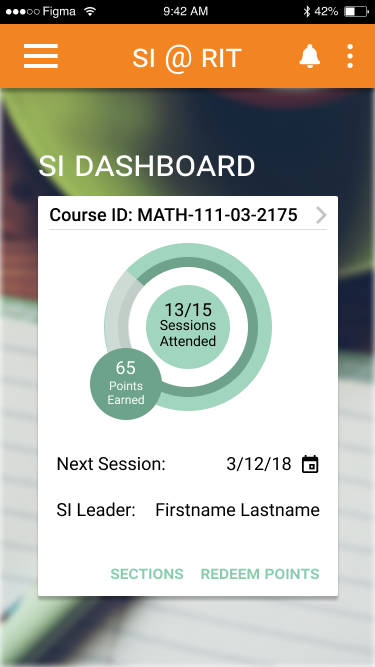

projects > supplemental instruction
Mockup by Anthony Boyd
supplemental instruction
Program Overview
Supplemental Instruction is an academic assistance program that started at the University of Missouri-Kansas City (UMKC) in the 1970s, and was first introduced to RIT in 2007. The SI program involves peer-led study sessions that are facilitated by a SI Leader - a student who has previously taken the course and received an A - and led by the students attending these sessions. Together, the SI Leaders and students create a peer-focused study group in which all are encouraged to reach their full potential.
The Challenge
The main goal of SI is to have the students learn how to integrate fundamental concepts and study habits into their daily routines, and facilitate a student's aptitude in their academic and professional careers. Another important characteristic to the success of SI is that the program reaches out to as many students as possible, through the SI Leader and their peers. The reliance on student participation makes SI a challenging, but innovative problem to analyze and prototype.
App Requirements
In creating a mobile application, different types of user for the SI app appear to have differing use cases and requirements. I chose to focus on two main audiences: employees of the SI program, and the students they tutored.
In consideration of students, they would require the ability to look up classes, and check if their class has an SI Leader; see session times, dates, locations, and SI Leaders ; directly contact SI Leaders through the app to check in or ask about a session; andsubmit feedback about the app, program, SI Leaders and sessions to faculty or their SI Leader.
Meanwhile, employees using the app may be more concerned with turning in SI paperwork; managing their schedule of upcoming study sessions; sending reminders to their students for upcoming sessions; and reviewing, adding, and removing materials related to the courses they tutor.
Wireframes
I designed lo-fi wireframes for the student and employee views of the application with their primary requirements and functions in mind. Many pages on either view are similar to one another, with smaller, key differences based on role. For example, employees would be able to send students notifications through the app on their upcoming study sessions; students wouldn't have this feature, as they aren't employees. Based on role, users would be presented with different login options and information. A few wireframes of either role are shown below.
Heuristic Evaluations
In doing heuristic evaluations of my wireframes, I recruited two different types of users: a current employee of the SI program, and a student who wasn't familiar with the program. User 1 was a tester who had heard of the SI program, but has never been involved in SI sessions or employed in the program. User 2 was a tester who is currently employed by SI as a database administrator, and has experience with the entirety of the program. User 1 focused more on the design choices made in the lo-fi prototype, while User 2 focused on functionality in consideration of the SI program and current implementations. The goal for this prototype is to replace these implementations with one cohesive, easy-to-use application.
From User 2’s observations, several modifications should be made in order to accommodate the true needs of the main audience of the app – that being employees of the SI program. She also discussed some design choices that could be refined, such as the lack of undo/back buttons, distinct icons and imagery, and respect of whitespace. User 1 had similar ideas for the design, emphasizing the need for the user to have control of where they are and where they can go within the app while simultaneously preventing the user from making errors as much as possible.
Hi-Fi Prototypes
The hi-fi prototype built for the SI program was split into two interfaces to more easily manage and test either audiences, as the needs of different audiences required separate components. The first case applies to employees and faculty of the SI program, and was built with functionality to support the tasks of the occupation. This includes study session planning and paperwork, communication with peers and supervisors, managing the schedule of sessions, training, and meetings, and the ability to have current implementations rolled into one efficient application. This interface was designed with the intent to be multi-functional with less focus on the program itself, given that current employees know the identity of the program well enough.
The second case applies to the student body at RIT who are involved with the SI program or want to learn more about SI. In this interface, functionality was focused more on a generalized platform that allowed users to enroll in a course supported by a SI Leader, manage their own calendar, get information on the program, and receives notifications linked to their course and calendar. Students enrolled in a course had the option to track how many sessions they'd attended and the 'points' associated with attendance, used for incentivizing the program and making the app a bit more appealing for students. The general audience not enrolled in a SI supported course could do all the same as the students, with the exception of tracking attendance and points earned. This interface was kept more simple to ensure the users could quickly find the information they needed without finding themselves overwhelmed.
More hi-fi designs of the different interfaces are shown below, with variations in user control and content depending on whether they chose to login as a student or as an employee.
Interactive prototypes: view the full student or employee interface.
Usability Testing
For testing either case, one user was needed for testing the employee interface, and another for the student/generalized interface. Participants were recruited from RIT, and consisted of undergraduates students who fell into one of two categories: has heard of the SI program, but never been involved/gone to a session; OR has moderate to extensive knowledge/involvement of the SI program.
Three participants were recruited: one was assigned to the employee interface, and the other two were assigned to the student interface. More testing was done with the student interface to gauge overall functionality and generalizability of that particular interface, and what it could provide to students.
The user who was assigned to test the employee interface was given several tasks to accomplish related to the typical workload of an SI Leader. The two users assigned to test the student interface was given more general tasks to navigate through the interface, and discover the functionality of the application based on their knowledge of the program and experience with the prototype. The common tasks all three users completed are as following:
- Log in as student/employee and navigate to the homepage
- Interact with the homepage calendar to view events
- Navigate the app using the menu drawer
- Change a setting on the Settings page
- Answer one of two questions, based on whether the user was interfacing with the student app or the employee app
- Log out of the app
Findings
In testing the student interface, most of the significant findings related to the visibility of the system and some issues relating to consistency and standards in regards to design choices. The first user completed the usability testing without encountering issues or errors, but did run into some roadblocks, mostly focused on navigation and menu hierarchy. They noted that there was some inconsistency with the button navigation for logging in: while one button said "login", the other said "continue as student". The user felt confused at the discrepancy, and tried to login with the first button before realizing what the second button was intended to do.
The first user also noted the menu hierarchy felt disorganized and could be better arranged to reflect the importance of each page in the app. For example, the About page may go at the bottom, since it does not contain much important information, and users are not likely to spend a lot of their time on that page. The user also tried to tap some buttons that were inactive on certain pages, which was notably inconsistent across the interface. The modal button interface gave this user some trouble, as some modals included simply text buttons within the modal, while others included modals with separated buttons. This reflected another inconsistency in the app, but did not interfere with the user's ability to complete tasks.
The second user that tested the student interface had more comments about the color scheme of certain components. They noted that the green chosen for certain modal buttons was too light to read against a white card layout, and that made it difficult to read the button text and complete some tasks. Otherwise, their comments were similar to the first user in regards to navigating across the interface. Both users successfully answered the question of "What purpose does the point system serve?", with slightly different answers. However, it was confirmed that the point system can be intuitively found to be a measure of incentive for students to attend more SI sessions and be able to obtain rewards in exchange, based on the points collected and use of the interface.
The test for the employee interface let to similar findings at the student interface, with a few more notes pinpointing functionality specific to the different interface. The user first tried to populate form fields, but was able to successfully proceed to the homepage of the employee interface after some testing of where to click. The user successfully navigated the employee interface, with some setbacks in navigating to certain pages given the split navigation (2 navigation menus). The only difficulty the user encountered was navigating to the settings page, which was included in the 'more' list navigation. The user had comments about the color scheme of the employee interface, noting readability was difficult on certain cards with the same green shade used in the student interface.
Lessons Learned
Overall, users were successfully able to complete tasks with limited issues. However, the issues encountered confirmed that the navigation of the application is inconsistent across both interfaces, and lead to challenges in finding the right page or modal to be using. Given these findings, future iterations of the SI at RIT app will include several revisions. The revisions will differ across interfaces based on individual feedback, with a focus on the following notes:
- Alter the color scheme for the light green option only - create a darkened shade to complement the orange/navy and make text more readable across both interfaces.
- Modify navigation to be one global system - perhaps forgo the side-drawer menu in favor of a tab-bar navigation, with a header for a 'more' navigation list where settings and other similar features can be found.
- Clarify the login page - either change both buttons to say "login as ______", "continue as _______", or delete one button and have an option under login to "continue as student" in text to differentiate between the options.
- Modals - make them consistent with their buttons, and perhaps merge the buttons to be inside the modal across both interfaces. Right now, there is inconsistency with how modals are used in both interfaces that make confirming/getting rid of modals difficult.
SI at RIT has the potential to expand and give more students the resources they need to succeed and excel in their classes. Through the SI at RIT app, student and SI leader connectivity is heightened, and SI Leaders can keep themselves on track while managing their own courses - allowing more time for themselves, the students they tutor, and more.